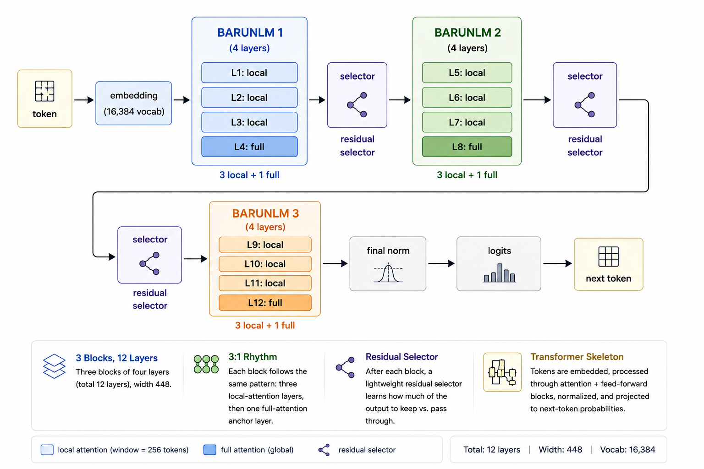

01Why build a 35M model?
barunlm has exactly 35,072,768 parameters. It trains on a single 24GB GPU with a 2,048-token context. On a frozen nine-task zero-shot suite, it scores 41.01%, leading every other sub-100M base model we measured under the same protocol. The paired bootstrap interval for that lead lands entirely above zero, at [+0.92, +2.71] points.
Those numbers frame the question that drives this project: how much capability can you squeeze out of almost no parameters? At 35M, capability per parameter is the whole game, so every component has to earn its place, measured rather than assumed. What follows is what that discipline produced: the ideas that are genuinely different, the data that feeds them, and the trade-offs we made, along with the ones we didn't.
02Architecture overview

Twelve layers of width 448, grouped into three blocks of four. Every block repeats the same 3:1 rhythm: three local-attention layers, then one full-attention anchor layer. A residual selector after each block decides how much of the output to keep. The skeleton is a familiar transformer: tokens embed, pass through attention and feed-forward blocks, and emerge as next-token probabilities. Everything interesting is in what barunlm changes about that skeleton.
03Key architectural innovations
1. The attention system: a 3:1 local/global rhythm
Attention is where a token decides which other tokens matter to it. barunlm's central idea is a fixed 3:1 rhythm: three local-attention layers that each see a 256-token window, then one full-attention layer that sees the entire sequence.
Most of what predicts the next token is nearby: syntax, morphology, adjacent lines of code. Local attention handles that cheaply and at a bounded cache size. But some things are not nearby. A pronoun refers to a name from the opening paragraph. An API definition lives much earlier in the file. With local attention alone, that information degrades through repeated local compression. The periodic full layer is the guaranteed "zoom out and check the whole map" moment, a scheduled global information exchange that prevents local-only information loss by construction.
Three supporting decisions keep the rhythm cheap. Grouped-query attention runs seven query heads against one shared key/value head, cutting the KV cache 7x. Partial RoPE rotates only half of each head's channels, keeping position and content in separate subspaces at zero parameter cost. Two stabilizers protect BF16 training. QK-norm pins query and key scale so attention doesn't saturate. An output gate, a sigmoid projection that scales the attention result channel by channel, lets a layer decline an irrelevant update. The gate is the one supporting decision we tested removing. It was 2.3% faster, but 17.6% worse in perplexity, so it stays.
2. Bounded SwiGLU, and why no experts
Feed-forward layers are where most of a transformer's computation happens. barunlm uses SwiGLU instead of a plain MLP: a multiplicative gate that buys more expressivity per parameter, at width 1,228. The distinctive part is the bound. Gate values are capped above 10, and the linear branch is clamped to [-10, 10]. BF16 training is wrecked by extreme outlier activations, so bounding preserves SwiGLU's expressivity while keeping training stable.
We also skipped Mixture-of-Experts. MoE routes tokens to subsets of experts, which at 35M parameters means most weights sit idle behind routes that never see enough training. A small model can't afford under-used weights. Dense layers mean every parameter sees every token, every time.
3. The residual selector: a learned "skip if unhelpful" path
After each four-layer block, the model RMS-normalizes the block's input and output, scores both with a tiny linear layer, softmaxes the two scores, and returns their convex combination. The model literally learns how much of each block to keep. It can bypass a block that didn't help and let the pre-block representation flow through.
This is a cheap safety valve for depth: a four-layer block is allowed to fail without corrupting the whole stack. It costs 1,344 parameters. Removing it sped training 5.3% under Muon but worsened perplexity by 1.2%, so it's kept in the quality reference model and disabled in the fast, slightly-lower-quality variant.
4. The tokenizer
Choosing the tokenizer turned out to be surprisingly important. We train a 16,384-token byte-level BPE on the exact pretraining mixture. Byte-level means code, Unicode, and formulas never hit an unknown token. Small matters because a large vocabulary would outsize the network at width 448. Input and output embeddings are tied, sharing one table, which saves 7.3M parameters and regularizes rare tokens.
04Data and training philosophy
A 35M model can't brute-force knowledge with width. It has to learn patterns efficiently, which makes data quality the highest-leverage decision in the project.
Capacity-aligned pretraining
Training used 5,699,985,408 tokens, or roughly 162 tokens for every parameter. That ratio is deliberate. Small models are data-hungry: they lack the capacity to compress broad knowledge, so they need a lot of clean signal to learn structure. The token budget was matched to the model's capacity. Not more, which wastes compute. Not less, which underfits.
The mixture
| Source | Share | What it is | Why it's there |
|---|---|---|---|
| FineWeb-Edu (deduplicated) | 50% | High-quality educational web pages | Broad factual base |
| Cosmopedia v2 | 20% | Synthetic textbook-style text | Repairs web fragmentation; coherent exposition |
| FineMath-4+ | 20% | High-quality math with reasoning chains | Teaches long, step-by-step deduction |
| Documented Python (CodeSearchNet) | 10% | Code paired with docstrings | Formal structure; intent matched to implementation |
Data synthesis: why generate text you could just scrape?
Web text is fragmented. Prose interleaves with boilerplate, navigation, and half-finished thoughts. A small model trained on that learns to reproduce the fragmentation: it starts sentences it doesn't finish.
Cosmopedia v2 is the antidote. It's generated by prompting a much larger, capable model to write complete educational passages: textbooks, stories, explanations, quizzes, across thousands of topics and reading levels. The result is text with a beginning, middle, and end.
The reasoning is simple. A small model learns by imitation, so the teacher's writing quality is a ceiling on the student's. Synthesis lets us manufacture the coherent signal the web doesn't reliably provide, and tune its content deliberately instead of accepting whatever the web happens to contain.
Cleaning before training
Every token gets cleaned before admission: cross-stage deduplication, quality filtering, document-level held-out hashing so evaluation samples that leak into training can be detected, and tokenization on the exact mixture. The reported results excluded 1,854 samples found by a correctness-blind exact 13-token scan over the full training history. The model was evaluated on data it provably never saw.
Optimization
We ended up with a hybrid optimizer. Muon handles the large weight matrices, while AdamW updates embeddings and normalization parameters. We evaluated Muon honestly against a full-AdamW run at the same peak learning rate: it improved perplexity by 0.6% but reduced throughput by 5.0%. So it stays as the reference optimizer, since the quality gain matters at this scale, while AdamW remains the practical speed option. The learning rate follows 5% warmup, an 80% plateau, then 15% cosine decay to 10% of peak.
The objective: next-token prediction, and the feature we rejected
We kept pretraining deliberately simple: plain causal next-token cross-entropy. The interesting decision is what we tried and removed. An early candidate added a multi-token prediction (MTP) head that also predicted the token two positions ahead, weighted at 0.2. Removing it improved perplexity by 3.0%, throughput by 12.8%, and peak memory by 11.2%. At this scale the extra head was wasted capacity; one clean objective trained better. MTP pays off at much larger scale, and the philosophy here is that every technique must earn its keep at 35M parameters, not at someone else's.
Regularization
Regularization comes from deduplication, tied embeddings, weight decay 0.1, gradient clipping at 1.0, and bounded activations. Dropout is zero on purpose: the 5.7B-token stream dwarfs the model, so the train/validation gap is small by construction, and dropout would only slow learning and muddy throughput. It stays configurable in case a longer run shows a real gap.
05Inference trade-offs
The 3:1 rhythm is a memory strategy as much as a quality one. The honest headline: it's a memory win, not yet a speed win.
During generation, a model has to remember previous tokens' keys and values, the KV cache. GQA already cuts it 7x. Nine of twelve layers retain at most 256 positions. Only the three anchor layers keep full history. At an 8,128-token prompt, the measured cache is 6.83 MB versus 24.97 MB for a dense GQA baseline, a 3.7x reduction. That's exactly what long prompts and streaming inference need on a memory-limited GPU.
The speed side is less flattering. In median-of-three L4 timings, prefill was 6.9% slower and decode 32.8% slower than the dense baseline. The compiled attention dispatch, the three selector operations, and the output gate all carry fixed overhead, especially during one-token decode. Weights are BF16 in research; quantization is deferred until accuracy is established. Closing the wall-clock gap is ongoing work, and the gate and selector earn their quality costs, while MTP did not.
We are working on the post-training of this model to make it more useful. Stay tuned for more of these.